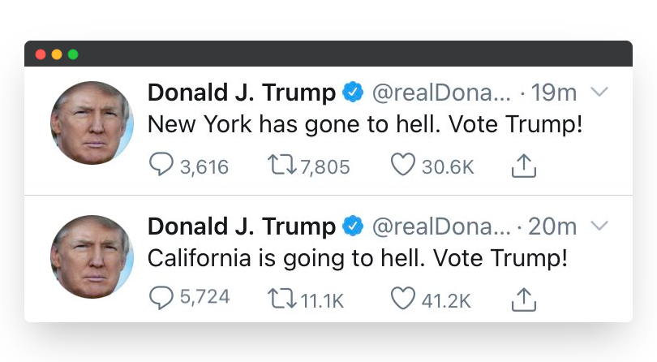

Donald Trump is undoubtedly one of the most controversial US presidents of all time. Trump's unmoderated social media presence on Twitter attracted worldwide attention as a constant source of simultaneous controversy, comedy, and insanity; and it likely will be remembered as a key part of his presidential legacy. This article explores some of the underlying trends in his usage of Twitter through text mining and sentiment analysis techniques,and what it says about his behaviour, strategy, and competancy.
The three states mentioned the most by Trump on Twitter during his presidential term - New York, Florida, Pennsylvania, and Texas (over 220+ mentions) - are unsurprisingly four of the top five most populous states in the US. Similarly, out of the least mentioned states, only two states have populations greater than 2 million. Two states on the least mentioned list, Wyoming and Idaho (both considered rural states), were comfortably won by Trump in the 2020 election. The rest of them, including the two larger states, Washington and Oregon, were all lost to Biden. This perhaps suggests that Trump felt those smaller states were not worth fighting for.
* Only tweets with the words "Washington State" were counted to avoid confusion with the US Capital in D.C
Interestingly, California - the US state with the largest population and most electoral votes with 55 - only ranked as the 7th most mentioned. A potential reason for this is due to California generally being considered a 'safe blue state', having voted Democratic in every election since 1992. It could be that Trump saw it as a battleground he was unlikely to win, and therefore gave it less of his social media effort and attention. Aside from California and New York (which may also have skewed results due to mentions of New York media outlets), the other top mentioned states he either won (Florida and Texas) or it was a relatively tight race with an average vote difference of 1.4%.
In order to more fairly assess which states Trump prioritised in his twitter social media strategy, mentions of each state were averaged out according to the amount of electoral votes per state to negate the disproportionate effect of population size. In addition, all of Trump's tweets were run through a sentiment analysis algorithm to give an approximate indication of which states he tended to tweet more positively or negatively about.
The states with the highest ratio of tweet mentions to electoral votes (Wisconsin, Iowa, Pennsylvania, and Georgia) were all considered key swingstates in the leadup to the 2020 election. Their importance in deciding the election result are likely the motivation behind the high frequency of mentions by Trump.
The average sentiment score across all the states was 0.22, suggesting his tweets were generally positive across the board. By exploring the context of the highest and lowest scoring states in more detail, we can start to see why this was the case. It becomes clear which states he had a strong relationship with, which regions he was attempting to court favour with, and the states he clearly disliked or had little regard for.
All of these states were won by Trump in 2016 and ultimately in 2020. They are states from which he had strong support and are historically red states, having all voted Republican since 2000. Therefore, it's clear why he was more positive when they were mentioned.
The graph shows 19 commonly used words by Trump on Twitter during his presidency that have a high level of negative sentiment and connotations of corruption and illegality. These words are a part of a larger list of comparable words that can be used to track and assess Trump's level of "anti-establishment" anger, resentment of the media, and general frustration throughout his presidency. In total, there were 2674 tweets that include at least one of these words out of the 16716 tweets made during his presidential term - over 15% of his tweets feature this negative language. In comparison, Obama mentioned these words in his presidential tweets a total of 19 times and at a negligible rate of 0.003%.
By mapping the frequency of these negative and corruption alleging tweets, it's clear the months that featured the most of these tweets coincided with important key moments during his presidency. The early peaks are centred around the Special Counsel Investigation that culmintated in the Mueller Report which was an investigation into potential collusion between Trump and Russia in the 2016 election. The contents of these tweets can be explored in the interactive tweet cluster map below. A continual theme throughout is Trump's labeling of the media as 'fake news'. There is also an increase in these negative sentiment tweets in May 2020, when he comes under fire for his response to the COVID-19 pandemic. The final peak aligns with the 2020 Presidential Election where he infamously claimed victory and electoral fraud despite defeat.
Click a point on the above line graph to view tweet cluster.
Tweets in close proximity are more similar according to the t-SNE statistical method; the colour saturation reflects the calculated sentiment rating.